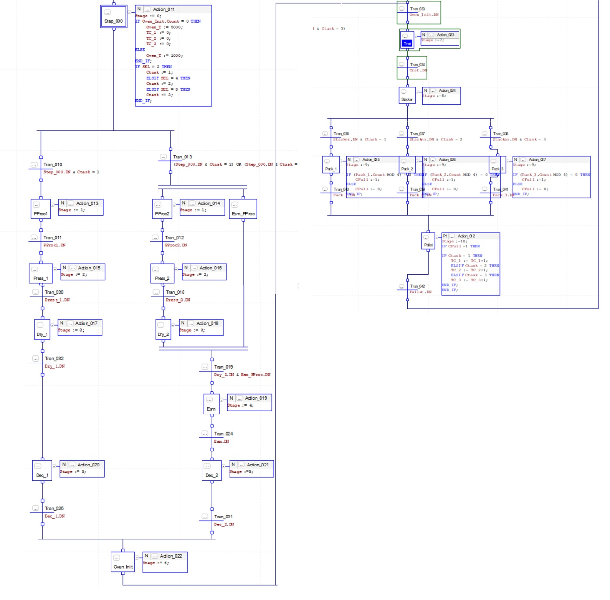
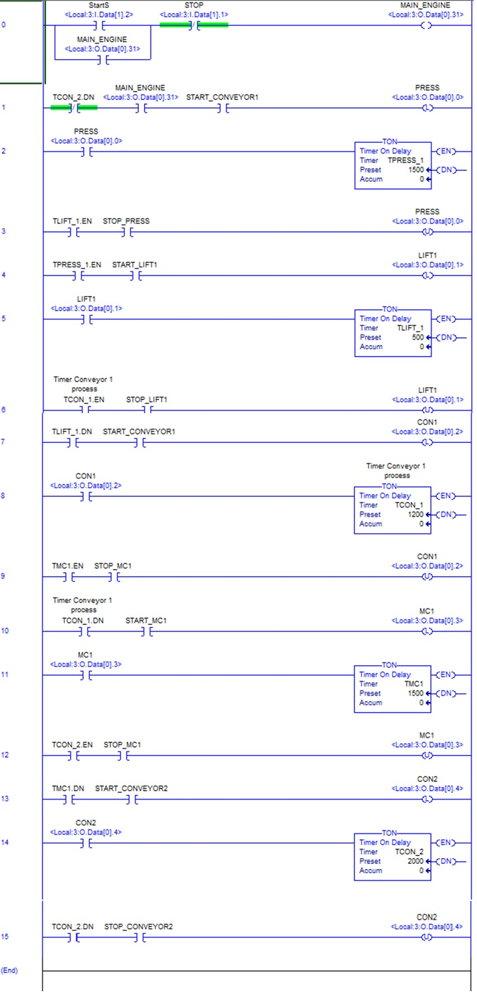

Industria 4.0

Para poder optimizar de manera adecuada y mantener la planta en un medio de funcionamiento competitivo para la industria moderna, consideramos esencial introducir los aspectos de la transformación digital tanto de manera práctica como a nivel organizacional. Siendo estos la integración de tecnologías modernas que nos permitan hallar soluciones óptimas tanto a nivel de producción como de organización y supervisión, de manera que el proceso se convierta en un medio eficaz, comprensible, y accesible para cada sección de la planta que conforma la misma.
Los aspectos de la Industria 4.0 que se van a implementar se pueden ver dependiendo de la sección de la pirámide que se encuentran:
Proceso:
- Sistemas ciber-físicos: Mediante la implementación de sensores y actuadores de alta velocidad, el proceso se puede optimizar para aumentar su eficiencia, seguridad, y reduciendo el riesgo de pérdidas o daños, tanto a operarios como a la maquinaria de producción de baldosas. Adicionalmente, esto nos permite la recopilación de grandes cantidades de información, lo que es esencial para los niveles superiores de la pirámide.
2- Control:
- PLC’s: Automatización de acciones clave durante el proceso de fabricación, usando la información de los sensores de campo.
- HMI: Capacidad de acceso a los datos en tiempo real y de hacer los ajustes necesarios en caso requerido, permitiendo mejorar el proceso de manera iterativa.
3- Supervisión:
- SCADA: Supervisión y control de todos los aspectos del proceso, e implementación de datos en tiempo real para poder observar secciones optimizables, e identificar los puntos críticos en los que el proceso se vea ralentizado.
4- Planificación:
- Gemelo Digital: Modelado y simulación del proceso, ahorrando tiempo y material de producción para identificar aspectos clave para la optimización de la planta de fabricación de Baldosas, capacidad de simular estado actual y futuro de la planta para entender el nivel de optimización que se planea alcanzar.
5- Gestión:
- IoT: Conexión y comunicación entre todos los sistemas para la recopilación continua de datos necesarios para análisis y mejoramiento de planta en tiempos óptimos.
- Cloud Computing: Acceso remoto a información de la planta que permita gestionarla desde cualquier lugar. La infraestructura en la nube permite la escalabilidad de los recursos de acuerdo con las necesidades de la planta sin ser necesaria una inversión masiva en hardware de gestión.
Programación
Grafcet
Usando Grafcet se realiza una representación por Etapas de la planta, lo que nos permite obtener un mayor entendimiento de la misma, al igual que identificar las posibles necesidades en términos de señalización y operación que requiera el proceso, ya sea esto por temas de control, supervisión, o seguridad.

Ladder
Haciendo uso de programación en Ladder, se diseña
un mecanismo de control fácilmente comprensible y
de amplia accesibilidad, el cual se puede implementar
tanto en PLC’s de planta como en simulaciones con
Gemelo Digital. La abstracción de proceso en el
marco de programación además permite la identificación
de puntos críticos y necesidades adicionales para
la planta.

Grafcet
Ladder